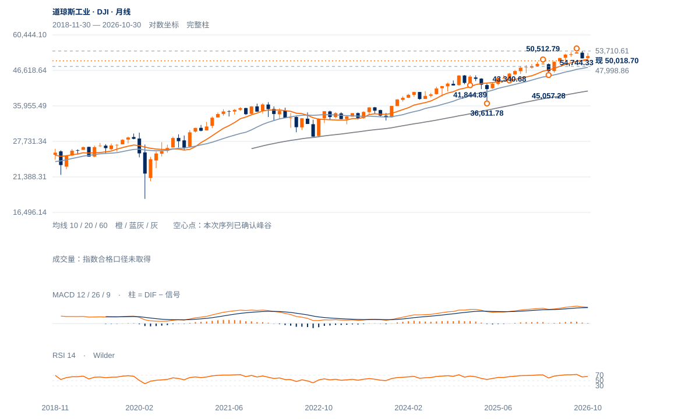

长期谷受检验
近期偏向50547测试与反弹，53710以前仍按区间防守。
近期偏向50547测试与反弹，53710以前仍按区间防守。
未来2—6周维持“长期谷受检验”的波段基准。原53710两日条件保留，54744为大高区。50547日收及周收分别核；没有完成周线前不预判双周失守。周线转折还需较高/较低同级拐点及完整收盘跟进；本周仍在进行中，不提前计周级确认。
未来1—3个月偏长期上升中的整理；50547周级持续失守会实质削弱防守趋势，工业和运输仍须用同日收盘峰谷补充确认。

展开图表 ↗2022低28661、2025低36612、今年低45057的主要谷仍抬高；10月均衡50556附近与10月实际低50547接近，提供长期防守试验区。
50759.42已明显回落到50547附近，防守领先并不等同已经上行。运输指数本次未更新，不沿用旧值声称新的同步确认。
11-13收52,347.55（+0.10%）；11-16收51,608.17（-1.41%）；11-17收50,759.42（-1.64%）。
RSI14 39.44；ATR14 712.64；无合格量口径。指数不计算OBV或以七股上涨家数替代全市场宽度。
2026-10-22 高52,927.88，确认日2026-10-29；2026-11-05 高53,710.61，确认日2026-11-12；2026-11-06 低50,992.61，确认日2026-11-13
原53710两日条件保留，54744为大高区。
50547日收及周收分别核；没有完成周线前不预判双周失守。
50547实际谷仍未失守，多年主要谷也未被完整反转；若防守后向上保持53710，当前区间偏弱判断应上调。
完整周线截至2026-11-13，完整月线截至2026-10-30；11月与本周尚未收完。长期窗口以近5—8年为主。